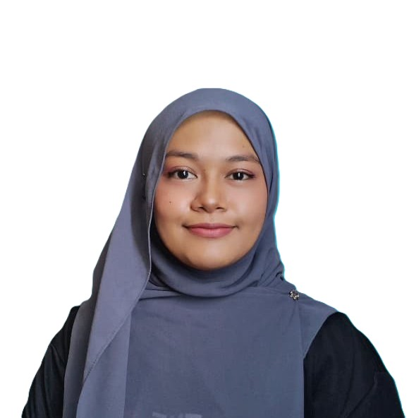

Terengganu offers crystal-clear islands, traditional villages, rich culture, and delicious local food such as keropok lekor.
User Profile Card

Che Ku NurulHuda
Fakulti Sains Komputer dan Matematik
Sarjana Muda Sains Komputer(Kejuruteraan Perisian) Dengan Kepujian
Universiti Malaysia Terengganu, UMT